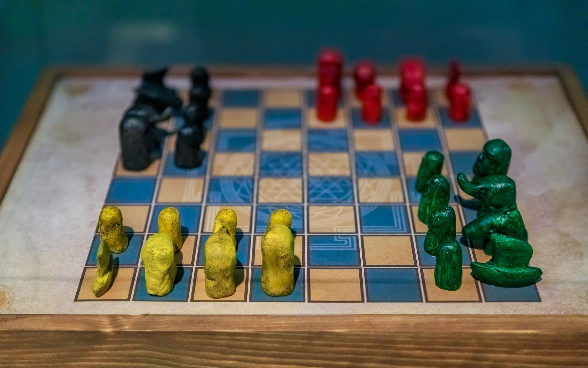

Chess is one of the oldest and most popular board game. It is played by two opponents on a checkered board with specially designed pieces of contrasting colours, traditionally white and black. The objective of the game is to capture the opponent's king.
Chess requires intense concentration, strategic thinking, and problem-solving skills. It also involves physical stamina, as players can spend hours sitting at the board, analyzing moves and making decisions. All these factors contribute to the board game evolving into a competitive sport.
The game of chess has evolved as it spread around the globe to the game we play today. As a result, this journey has brought people together from different cultures, ages, and backgrounds over a common bond and passion for the game. You should play now!
The king can only move 1 step in all directions.
| a | b | c | d | e | f | g | h | |
|---|---|---|---|---|---|---|---|---|
| 8 | ||||||||
| 7 | ||||||||
| 6 | ||||||||
| 5 | ||||||||
| 4 | ||||||||
| 3 | ||||||||
| 2 | ||||||||
| 1 |
Chess, as we know it today, was born out of the Indian game chaturanga before the 600s AD. The game spread throughout Asia and Europe over the coming centuries, and eventually evolved into what we know as chess around the 16th century. One of the first masters of the game was a Spanish priest named Ruy Lopez. Although he didn't invent the opening named after him, he analyzed it in a book he published in 1561.
Since at least the 15th century, chess has been known as the “royal game” because of its popularity among the nobility. Rules and set design slowly evolved until both reached today’s standard in the early 19th century. Once an intellectual diversion favoured by the upper classes, chess went through an explosive growth in interest during the 20th century as professional and state-sponsored players competed for an officially recognized world championship title and increasingly lucrative tournament prizes. Organized chess tournaments, postal correspondence games, and Internet chess now attract men, women, and children around the world.
The Italian game begins with 1. e4 e5 2. Nf3 Nc6 3. Bc4. The point is to control the center quickly with your pawn and knight and then put your bishop on its most dangerous square. You are also preparing to castle to safety.
The Sicilian Defense is the most popular choice of aggressive players with the black pieces. Often White will play 2.Nf3 and 3.d4 which will gain central space, but it allows Black to benefit by exchanging a central pawn for a bishop's pawn.
The French Defense is one of the first strategic openings every chess player should learn. After e5 (now or later), both sides will have pawn chains. One risk of the French Defense is that the c8-bishop can be very hard to develop.